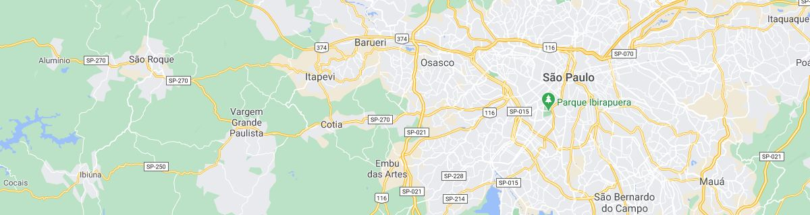

Reserve seu passeio agora. Envie sua mensagem!
Sabia que facilitamos tudo para você? Agende seus passeios e receba atendimento direto pelo WhatsApp. É prático, rápido e descomplicado. Estamos à disposição para tornar sua experiência ainda mais fácil.
Entre em contato conosco.
+55 (51) 99999-9999
contatobrasiltourcom
Conecte-se conosco nas redes sociais
facebook.com instagram.com
youtube.com
contatobrasiltour.com
Venha nos conhecer pessoalmente
Rua Amazônia , 2024 Bairro das Araras - Porto Alegre - RS CEP
123456-789
Sobre nós
A Brasil Tour nasceu da aspiração eterna de explorar o desconhecido. Movidos pelo desejo de desvendar os encantos do Brasil, transformamos essa paixão em realidade, construindo experiências seguras e inesquecíveis. Assim como o sonho de voar, a Brasil Tour se dedica a proporcionar aventuras que transcendem os limites da imaginação, conectando os viajantes ao coração pulsante do nosso país.
-
1. Como posso agendar um passeio?
Você pode agendar um passeio facilmente através do nosso site ou entrando em contato diretamente pelo WhatsApp.
-
2. Qual é a política de cancelamento?
Oferecemos políticas flexíveis de cancelamento. Consulte nossa página de termos e condições para obter mais detalhes.
-
3. Quais são os documentos necessários para participar dos passeios?
Os documentos necessários incluem RG ou passaporte, laudo médico, ficha de inscrição, carteira e comprovante de residência. Certifique-se de verificar os requisitos específicos para cada passeio.
-
4. Como posso obter informações sobre as condições meteorológicas para o passeio?
Fornecemos atualizações regulares sobre as condições meteorológicas em nosso site. Além disso, nossa equipe entrará em contato se houver alguma alteração no itinerário devido às condições adversas.
Clique no mapa para abrir o aplicativo Google Maps.
